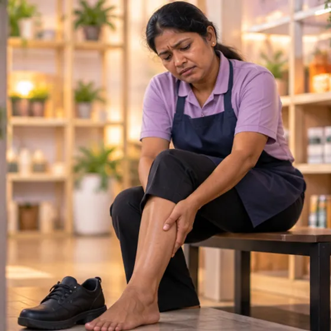
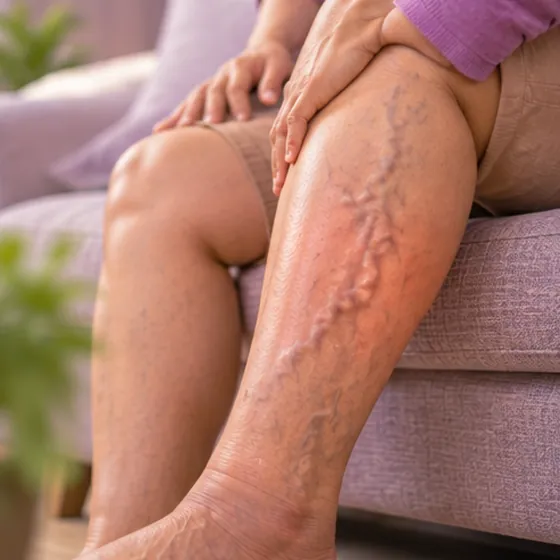

Swollen ankles and tops of the feet (oedema)
Fluid build-up that makes the ankles and tops of the feet puffy
What it is
Extra fluid collects in the tissue around the ankles and feet, so they look puffy and may feel tight or heavy, often more by evening.
- Ankles and feet
- Any age, more with age
- Puffy, tight, heavy
- Which doctor
- Family doctor; heart or kidney doctor if needed
- Common in
- Older adults, pregnancy, long standing or sitting, heart, kidney or liver problems
- Contagious
- No
- Course
- Often eases after rest and raising the legs; if it keeps coming back, see a doctor
Common signs

Swollen legs and anklesPeripheral oedema 
Heavy, tired legsLeg fatigue 
Hard to walk farReduced walking tolerance 
Bulging veins in the legsVaricose veins
Why it happens

PregnancyPregnancy-related change 
A side effect of some medicinesAdverse drug effect Salty, smoked or preserved foodPreserved food
Other causes
- Standing or sitting for a long time, especially in hot weather
- Weak leg veins, or heart, kidney or liver problems
See a doctor first if
- Sudden chest pain or trouble breathing together with swelling: call 999
- One leg suddenly swollen, red, warm or painful: go to hospital now
- Swelling with fast weight gain, or needing more pillows to breathe at night
- Pressing the skin leaves a dent that stays
- Swelling in pregnancy with bad headache or blurry vision
If any apply, please see a doctor before a session.
This page is general information. Please keep taking your normal medicine and keep seeing your doctor.
Keep taking your normal medicine and keep seeing your doctor. Our session is a gentle support and does not replace medical care.
Looking after yourself

Eat less saltLow-salt diet 
Wear comfortable, supportive shoesSupportive footwear
More ways to look after yourself
- Raise your legs on a pillow when resting
- Walk around often; do not stand or sit still for hours
- Ask your doctor before changing any medicine
Tell your therapist
- A blood clot or a new swollen leg
- A heart condition
- A kidney or liver condition
- Pregnancy
- Blood-thinning medicine
Your therapist will go through this with you before starting.
Questions and answers
What is Swollen ankles and tops of the feet (oedema)?
Fluid build-up that makes the ankles and tops of the feet puffy. Extra fluid collects in the tissue around the ankles and feet, so they look puffy and may feel tight or heavy, often more by evening.
What are the common signs of Swollen ankles and tops of the feet (oedema)?
Swollen legs and ankles · Heavy, tired legs · Hard to walk far · Bulging veins in the legs
Why does Swollen ankles and tops of the feet (oedema) happen?
Pregnancy · A side effect of some medicines · Salty, smoked or preserved food
How can I look after myself with Swollen ankles and tops of the feet (oedema)?
Eat less salt · Wear comfortable, supportive shoes
Can an AI Body Master session help with Swollen ankles and tops of the feet (oedema)?
A session is gentle, needle-free meridian support for your wellbeing. It does not treat or cure Swollen ankles and tops of the feet (oedema) and never replaces your medicine or your doctor. Tell your therapist about it before the session starts.
Related conditions
References: General information based on public health sources such as Mayo Clinic, NHS, Cleveland Clinic and NCBI StatPearls.
Page updated: 2026-11-09